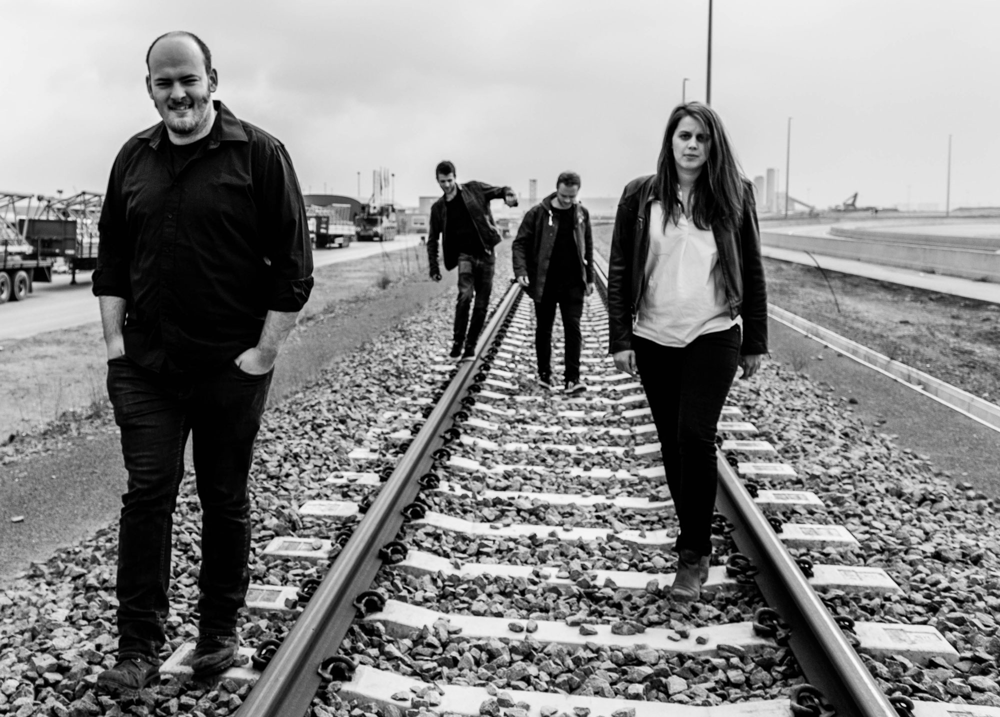
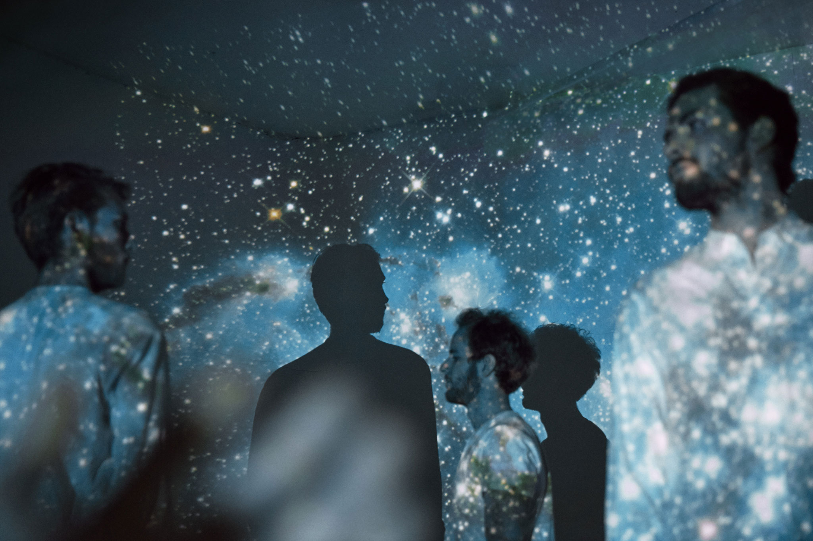
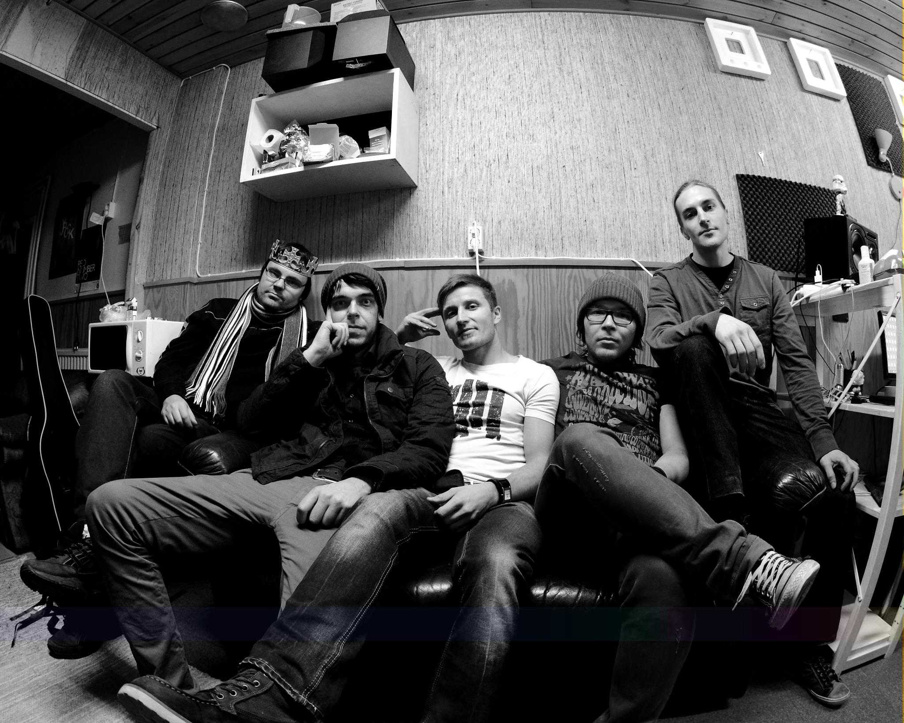
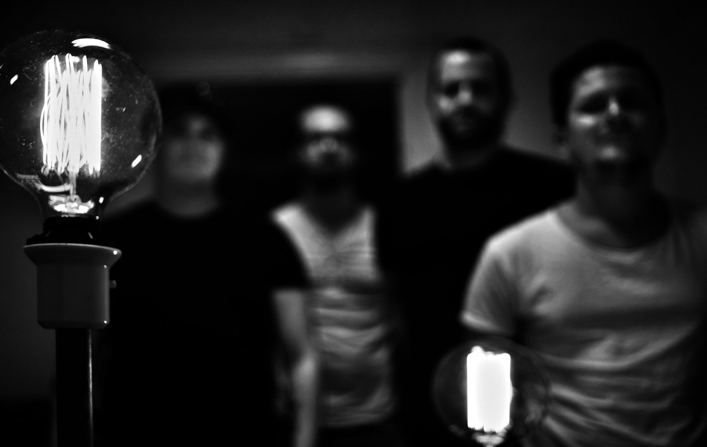
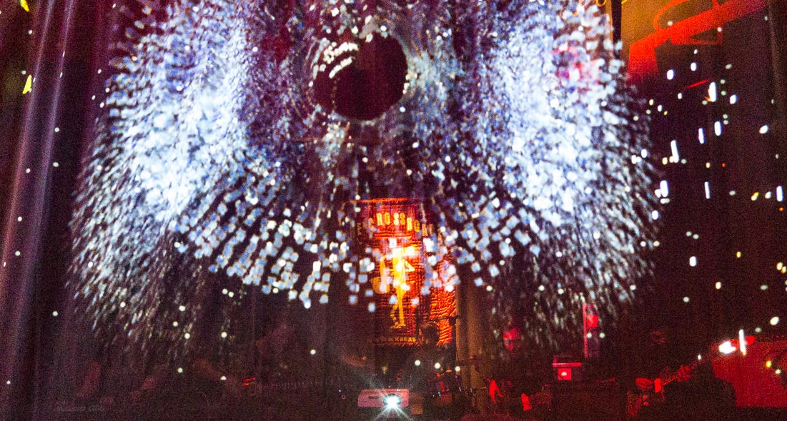
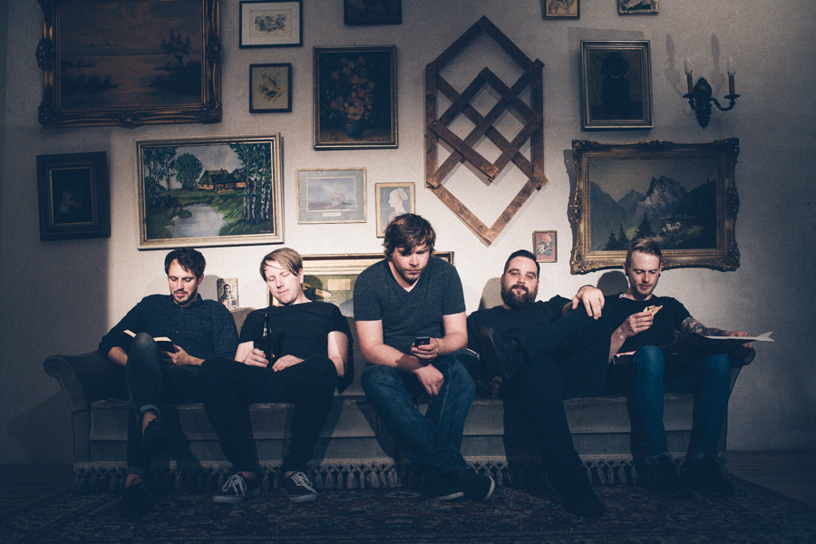
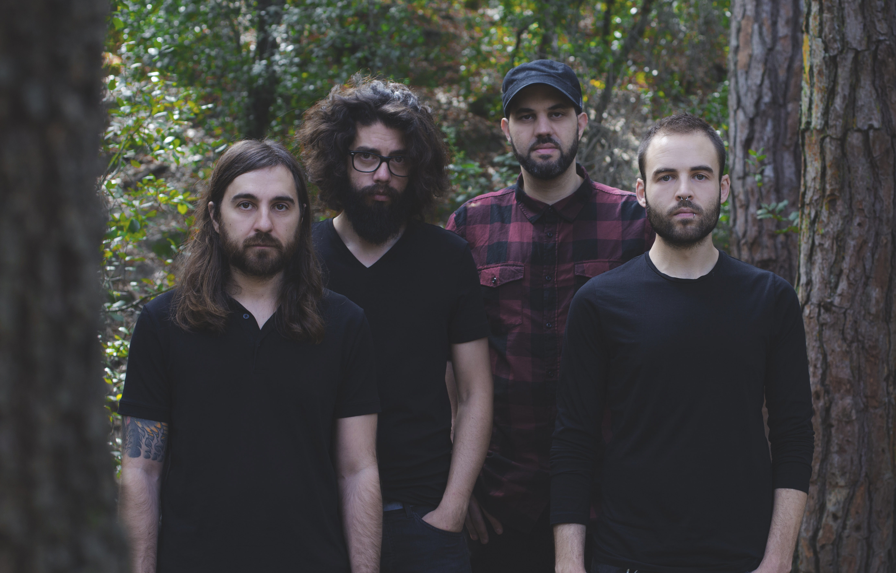

FRIDAY 23RD OF SEPTEMBER
doors open 17:00VERNISSAGE, FESTIVAL EXHIBITION 17:30
WE STOOD LIKE KINGS 18:30
ASTROSAUR 20:25
BAULTA 21:40
YNDI HALDA 23:00
DJ 24:00-02:00
SATURDAY 24TH OF SEPTEMBER
doors open 17:00SAGOR SOM LEDER MOT SLUTET 18:00
SVK 19:15
EUPANA 20:30
KOKOMO 21:45
SYBERIA 23:00
DJ 24:00-02:00
We are proud to present nine bands performing their set at VIVID. a post_rock festival this year - all performing with visuals in our old movie theatre venue.
We Stood Like Kings
from Brussels, Belgium wslk.bandcamp.com
#progressiverock #alternative #cinematicrock #classicalpiano #epic #instrumental #postrock #silentmoviesoundtrack Astrosaur
from Oslo, Norway astrosaur.bandcamp.com
#rock #experimentalrock #instrumentalrock #progressiverock #stoner Baulta
from Jyväskylä, Finland baulta.bandcamp.com
#alternative #post-metal #postrock #instrumental
Yndi Halda
from Cambridge, England www.yndihalda.com
#cinematic #postrock #modern #classical Sagor Som Leder Mot Slutet
from Malmö, Sweden sagorsomledermotslutet.bandcamp.com
#metal #ambient #postrock
SVK
from Oslo, Norway svk-band.bandcamp.com
#alternative #ambient #experimentalrock #instrumentalrock #postrock #progressive #stoner Eupana
from New York, USA eupana.bandcamp.com
#rock #ambient #instrumental #orchestral #postrock Kokomo
from Duisburg, Germany kokomoband.bandcamp.com
#ambient #instrumental #postrock Syberia
from Barcelona, Spain syberia.bandcamp.com
#postrock #postmetal #instrumental #experimentalPlease feel free to share our event, this status or whatever makes you happy (?). Don't forget to click that you are interested in our event to make sure you won't miss the announcement of our two headliner.